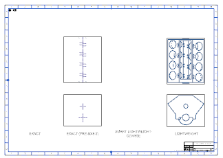
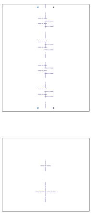

Review the exact views
-
Open the Part Navigator
 , and then under the Drawing node, double click Sheet “Sheet 2” to open it.
, and then under the Drawing node, double click Sheet “Sheet 2” to open it.

Sheet “Sheet 2” Work (Unloaded)There is a mixture of pre-NX8.5 exact and lightweight views on this drawing sheet. The pre-NX8.5 exact views show precise model faces and edges. However since no model data is currently loaded into your session, all you see are the retained centerline symbols associated with the unloaded geometry and the view borders themselves. There are no extracted edges in either of these two views.
EXACT (PRE-NX8.5)